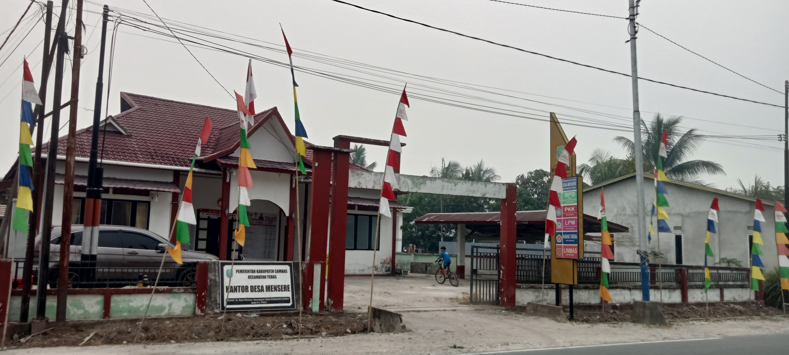
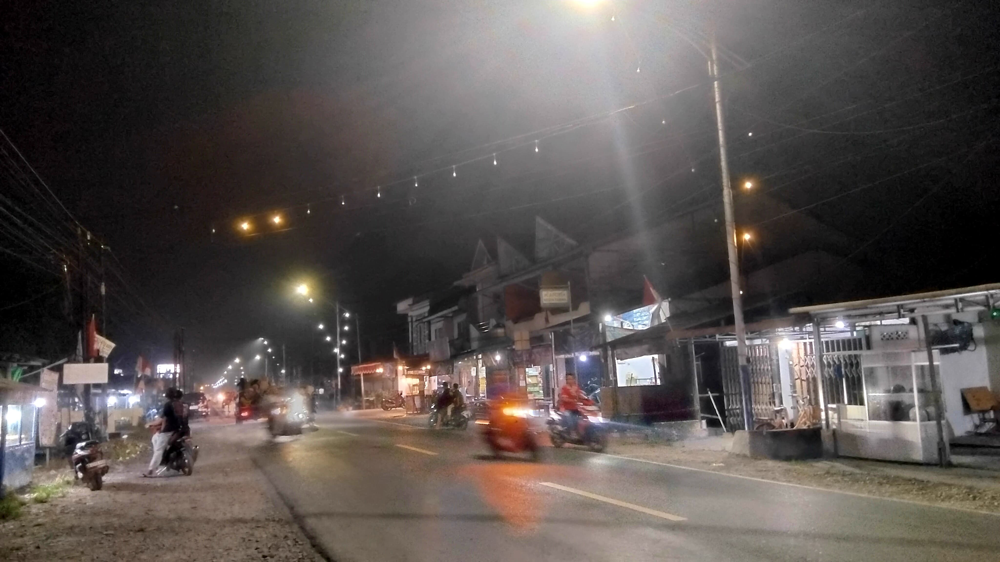
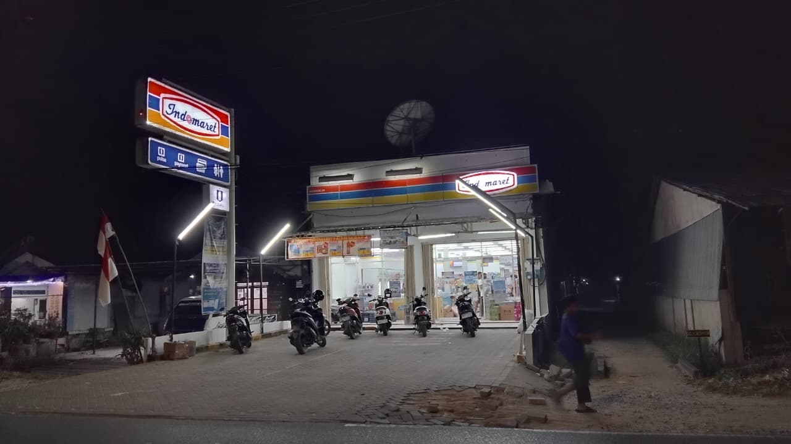

JELAJAHI DESA
Tempat Penting di Desa
Kenali berbagai fasilitas yang ada di Desa Mensere.

🏢 Kantor Desa
Kantor desa merupakan pusat pelayanan masyarakat dan pemerintahan desa.
📍 Lihat lokasi

🕌 Masjid Al-Ikhlas Mensere
Masjid yang berada di Desa Mensere dan menjadi tempat ibadah masyarakat.
📍 Lihat di Google Maps

🏪 Indomaret
Indomaret sebagai salah satu tempat masyarakat berbelanja kebutuhan sehari-hari.
📍 Lihat lokasiBUDAYA & KEBERSAMAAN
Budaya dan Kebersamaan Desa Mensere
Semangat gotong royong dan kebersamaan menjadi bagian penting dalam kehidupan masyarakat desa.
🎭 Budaya Desa
Beragam budaya dan tradisi masyarakat menjadi bagian dari kehidupan Desa Mensere yang terus dijaga dan dihargai bersama.
🤝 Gotong Royong
Masyarakat saling membantu dalam berbagai kegiatan untuk menciptakan lingkungan desa yang nyaman dan harmonis.
BUDAYA & KEBERSAMAAN
Budaya dan Kebersamaan Desa Mensere
Semangat kebersamaan dan gotong royong menjadi bagian dari kehidupan masyarakat Desa Mensere.
Budaya Desa
Budaya dan tradisi masyarakat Desa Mensere menjadi bagian dari kehidupan desa yang terus dijaga dan dihargai bersama.
Gotong Royong
Masyarakat saling membantu dalam berbagai kegiatan untuk menciptakan lingkungan desa yang nyaman dan harmonis.
Kebersamaan
Kebersamaan warga menjadi kekuatan untuk membangun Desa Mensere yang aman, nyaman, dan harmonis.
HUBUNGI KAMI
Pemerintah Desa Mensere
📍 Jl. Ahmad Yani, Kec.Tebas, Kab.Sambas
📞 08xxxxxxxxxx
✉️ desamensere@email.com